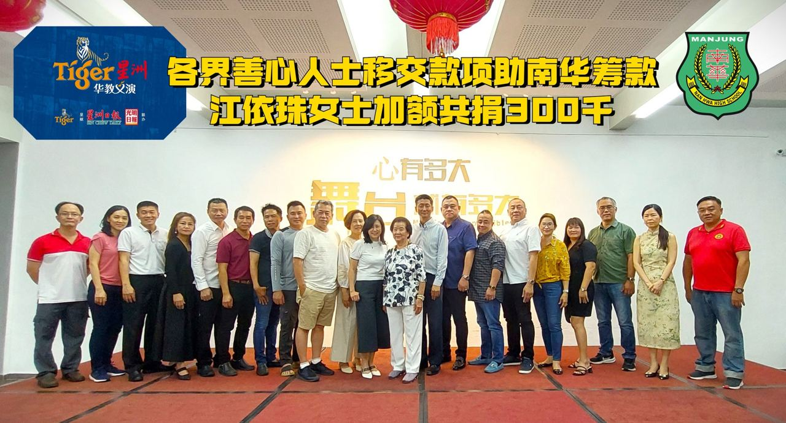
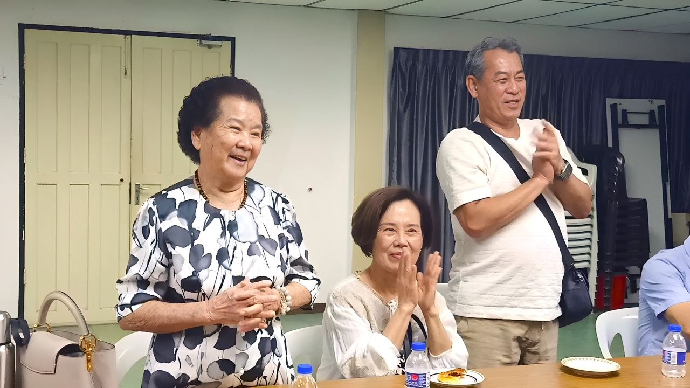
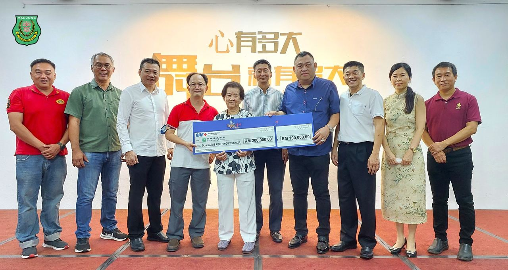
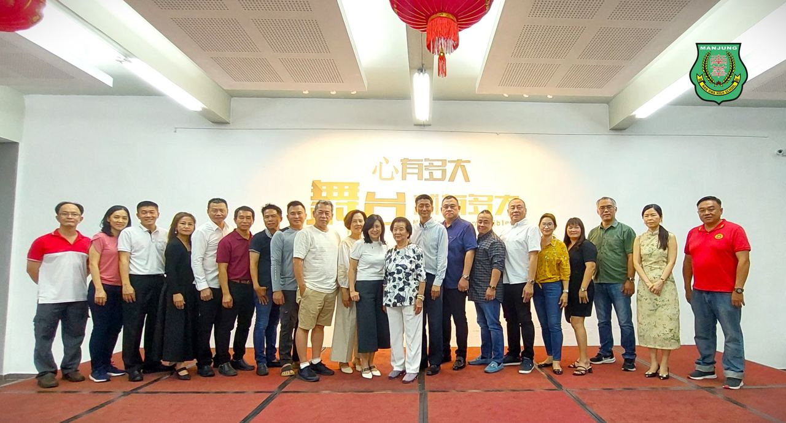
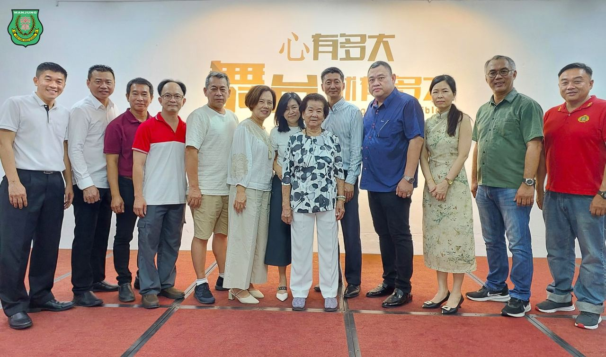
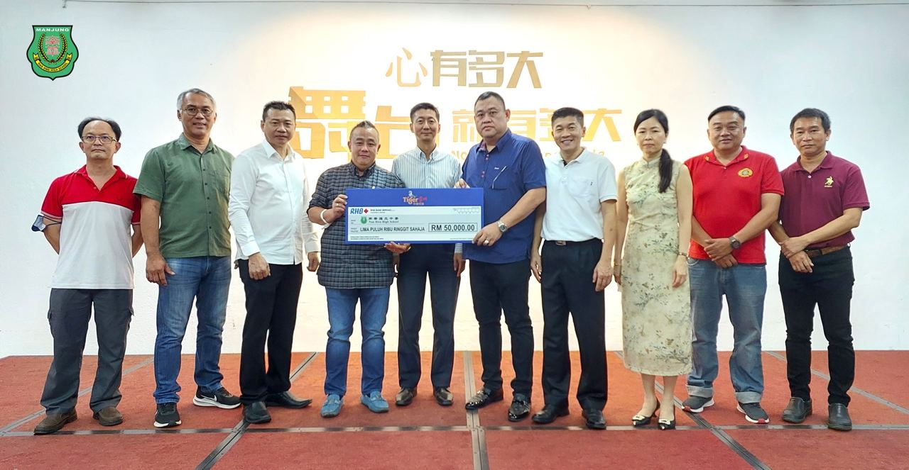
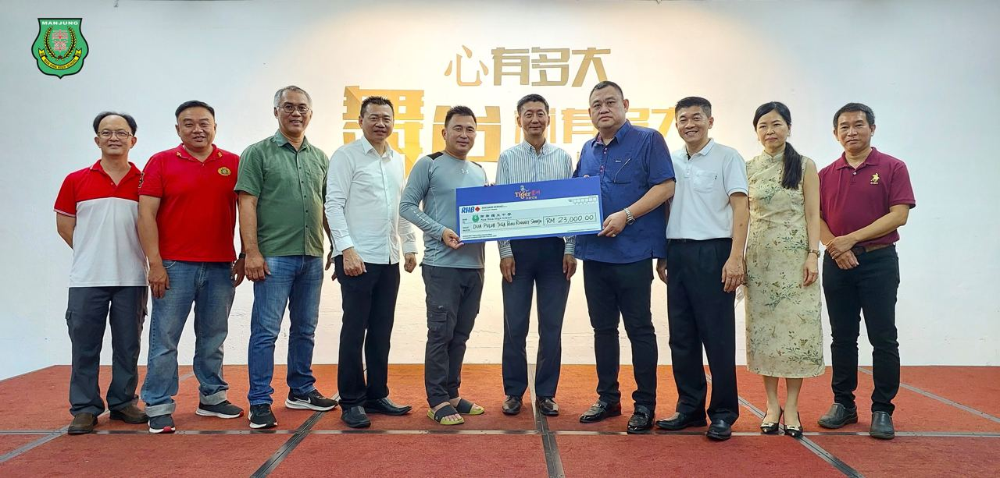
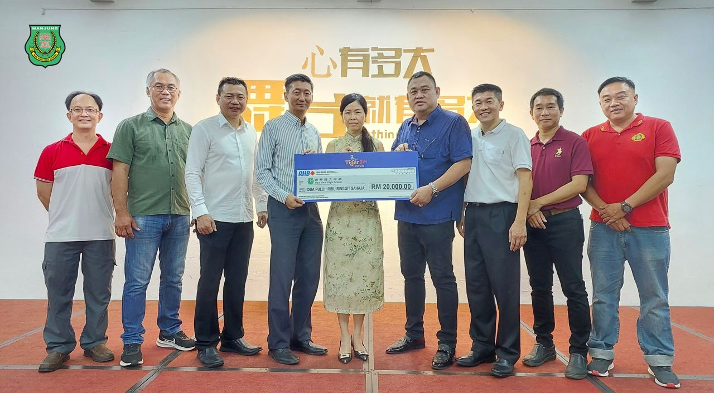

各界善心人士移交款项助南华筹款
各界善心人士移交款项助南华筹款
江依珠女士加额共捐300千
南华独中Tiger星洲华教义演筹款活动定于9月30日在曼绒古田会馆礼堂举办。校方旨在筹募300万令吉，以用于扩建和打造现代化图书馆。日前，多位社会善心人士亲临南华独中移交款项，以行动支持南华独中筹款活动。
已经答应捐款200千的江依珠女士，是毕业于1991年的校友王瑞凤的母亲，此行随着女儿回访母校南华独中，经过参观校园和深入交流以后，江依珠女士对该校的办学愿景和理念深表认同，并临时决定加额100千，款项多大马币300千，为筹款活动锦上添花。
江依珠女士在交付捐款时表示，当初她和家人住在霹雳昔加里，当她的女儿就读南华独中时，她经常听到她对学校的赞誉。她说：“人如果处于艰辛的阶段，是很辛苦的，如果你们（南华独中）过得辛苦，我听了也感到难受。”江女士提到，当时家境贫困，无法给予实质性的帮助。现在她的孩子长大了，她也没什么花销，留下了一些积蓄。她了解到学校正需要一笔资金来建设图书馆，而学校的工作也做得非常好，因此决定捐出这笔钱，为教育事业贡献自己的一份力量。
南华独中Tiger华教义演工委会主席高级拿督叶绍利对日前前来亲自移交款项的热心人士表达了万分的感激之情，特别是对于南华独中所做的一切。他表示，这笔捐赠将对学校的发展产生重要影响，并为学生提供更好的学习环境和资源。叶绍利还补充道，这种支持和奉献精神体现了社会人士对学校的深厚情感和对教育的重视，这将激励更多人积极参与筹款活动，共同为南华独中的未来发展贡献力量。
这次筹款活动的成功将有助于南华独中实现其扩建和现代化图书馆的目标。南华独中一直以来致力于为学生提供优质的教育，并通过各种活动和项目来丰富他们的学习经验。随着图书馆的建设，学校将能够提供更多的学习资源，帮助学生开拓视野，培养他们的阅读兴趣和知识技能。
校方对于各方的慷慨捐赠表示衷心感谢，并表示将妥善利用这笔资金，确保图书馆的建设取得圆满成功，并为学生们提供更好的学习环境。同时，他们也希望这样的善举能够激发更多人对教育事业的关注和支持，共同为莘莘学子的成长和发展营造更加优良的教育环境。
#Tiger星洲华教义演 #移交款项
#扩建图书馆 #现代化图书馆
#930义演 #南华独中 #曼绒 #实兆远







